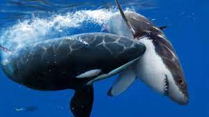
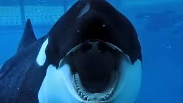
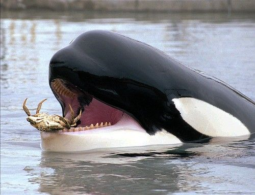
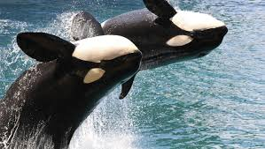
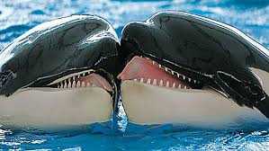
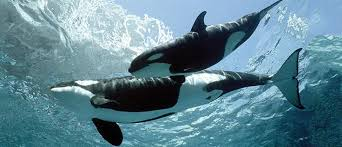

La dieta de las ballenas orcas incluye peces, calamares, focas, leones marinos, morsas, aves, tortugas marinas, nutrias, pingüinos, osos polares, reptiles, tiburones, pulpos y ballenas más pequeñas. Sin embargo los hábitos de alimentación de las ballenas orcas dependerán del lugar que habitan en un momento determinado.
Las orcas comen alrededor de 500 libras de comida cada día. Por lo tanto, gastan hasta el 60% de su tiempo para conseguir comida. En algunos casos raros, incluso mamíferos terrestres se han encontrado en el estómago de algunas orcas o ballenas asesinas, algunas ocasiones se han comido hasta otras ballenas orcas, aunque este comportamiento no se ha documentado científicamente para conocer las razones del por qué algo tan extraño podría suceder. La compleja estructura social de las orcas se utiliza para cazar y buscar comida. Las vainas están perfectamente coordinadas para atrapar a presas grandes y pequeñas. Poseen técnicas de pastoreo en una zona controlada donde el grupo rodea a la presa y los miembros de la vaina se turnan para comer. Durante esta técnica llamada pastoreo, un grupo de ballenas orcas rodean a un grupo de peces o presa y cierran el perímetro para concentrar a la presa tanto como sea posible. A continuación, miembros individuales se turnan para nadar a través de la presa y comer tanto como sea posible. Al la presa estar confinada en un área pequeña, ayuda a que todo el proceso sea más eficiente y puedan comer lo más rápido posible.
  Las ballenas orcas viven en vainas donde las hembras son la autoridad. Machos y hembras que viven con sus madres durante toda su vida. Para evitar el entrecruzamiento, las ballenas orcas sólo se aparean con los de otras vainas. El hábitat de estas vainas o grupos se superponen mucho por lo que no es difícil para ellos encontrar a otros que puedan aparearse. Los machos son muy competitivos, cuando se trata de las hembras con las que se aparean. Terminan en batallas donde la sangre se dibuja con sus dientes. Muchas ballenas orcas adultas se ven con cicatrices por todo el cuerpo. Este es el resultado de estas batallas por el derecho a reproducirse. A veces las hembras terminan de esa manera también debido a la naturaleza agresiva de los machos cuando el proceso de apareamiento se lleva a cabo. La reproducción tiene lugar a finales de la vida de las ballenas orcas. Las hembras no tienen la madurez hasta que tienen aproximadamente 15 años de edad. Para los machos es entre los 15 y 21 años de edad. Las hembras pueden aparearse hasta que tienen alrededor de 40 años de edad. Ellos no van a aparearse cada año, sino lo que se conoce como un ciclo poliestro para las hembras. Tienen ciclos de fertilización al igual que las hembras humanas, donde pueden o no ser capaces de concebir.
  